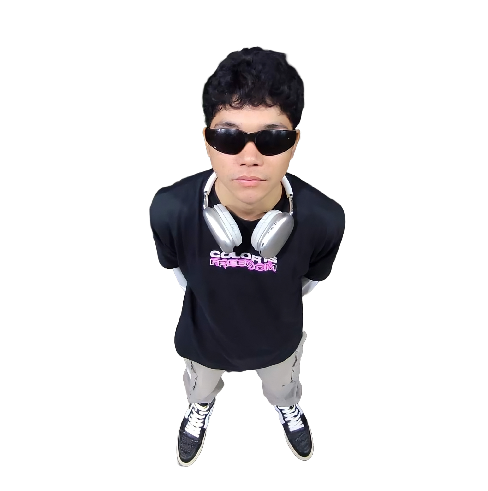
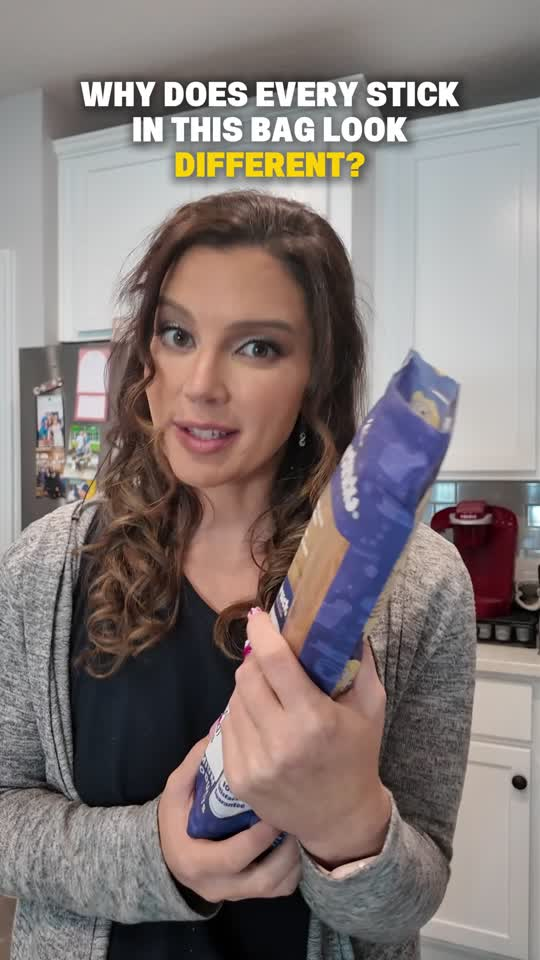
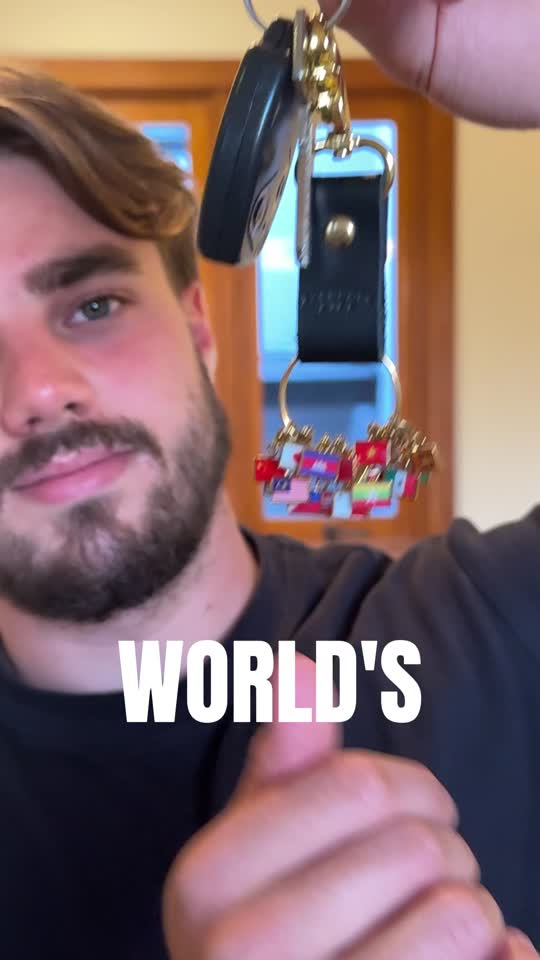
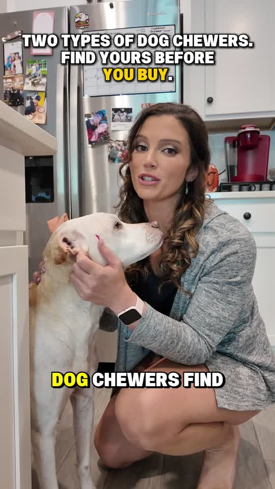
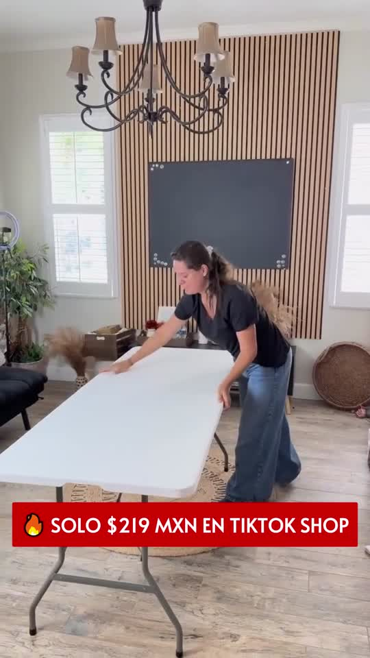
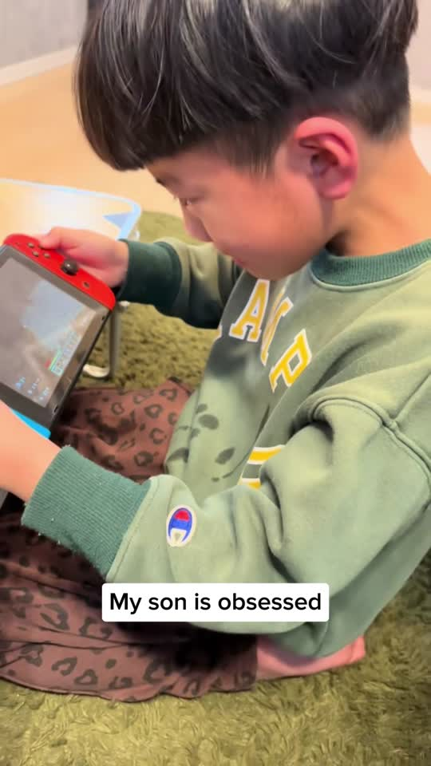
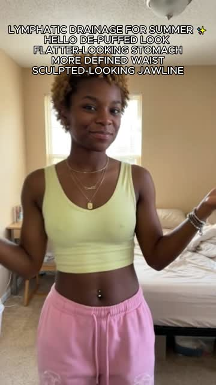
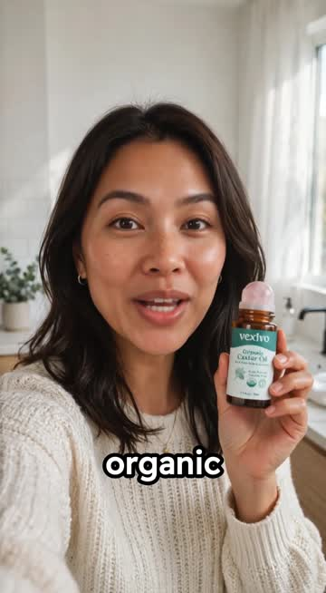
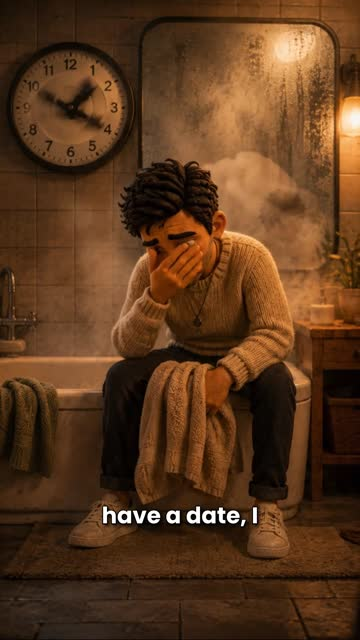

019:16 / UGC
AI CREATIVE TECHNOLOGIST
HEY, I'M
REYCINTH
MACABANTE
I CREATE WITHAI CONTENT
AI content, video, design, e-commerce and web — bringing creative ideas into polished digital experiences.

01 / 09INTERACTIVE MODE
PH / DIGITAL STUDIO LIVE
AI VIDEO✦UGC ADS✦CREATIVE DESIGN✦E-COMMERCE✦WEB✦AI VIDEO✦UGC ADS✦CREATIVE DESIGN✦E-COMMERCE✦WEB✦
SELECTED WORK
CREATIVE
OUTPUT.
12 selected performance creatives — UGC performance content and AI advertising work. More AI ad samples will be added to the final six slots.





079:16 / AI AD

099:16 / AI AD

119:16 / AI AD

ABOUT / 01
CREATIVE
+ TECHNICAL.
I'm Reycinth Macabante — an IT graduate and digital creative focused on using technology and AI to build visual content people remember.
I work across AI content creation, video editing, graphic design, e-commerce, social media and front-end development. I enjoy learning new tools, testing ideas, and refining the details that help a creative project feel clear, polished and purposeful.
WHAT I BRING / 02
IDEAS INTO
EXECUTION.
A flexible creative skill set that connects visual storytelling, marketing goals and practical technology.
CREATE
AI CONTENT & VIDEO
Develop AI-assisted visuals, short-form videos and ad creatives. Build around a clear hook, focused message, captions, sound and a strong call to action.
DESIGN
GRAPHIC & BRAND ASSETS
Create social posts, promotional layouts, product visuals and marketing materials using Canva and Adobe design tools.
GROW
E-COMMERCE & SOCIAL
Support product listings, social content, customer inquiries and engagement-focused creative for online audiences.
BUILD
WEB & DIGITAL TOOLS
Use my software engineering foundation to build and refine websites, interactive portfolio experiences and digital layouts.
WHAT I BRING / 02
IDEAS INTO
EXECUTION.
A flexible creative skill set that connects visual storytelling, marketing goals and practical technology.
CREATE
AI CONTENT & VIDEO
Develop AI-assisted visuals, short-form videos and ad creatives. Build around a clear hook, focused message, captions, sound and a strong call to action.
DESIGN
GRAPHIC & BRAND ASSETS
Create social posts, promotional layouts, product visuals and marketing materials using Canva and Adobe design tools.
GROW
E-COMMERCE & SOCIAL
Support product listings, social content, customer inquiries and engagement-focused creative for online audiences.
BUILD
WEB & DIGITAL TOOLS
Use my software engineering foundation to build and refine websites, interactive portfolio experiences and digital layouts.
INTERACTIVE TOOL WALL
THE
STACK.
A structured creative-tech toolkit. Hover each card to reveal its role and move through the stack to explore the tools behind the work.
01
AI / GENERATION
CREATE
CHATGPTMIDJOURNEYHIGGSFIELDRUNWAYVEOELEVENLABSCLAUDE
02
EDIT / DESIGN
CRAFT
CAPCUTPHOTOSHOPILLUSTRATORPREMIERE PROAFTER EFFECTSFIGMACANVA
03
WEB / GROWTH
DEPLOY
WORDPRESSJAVASCRIPTTAILWINDRELUMEMETA BUSINESSTIKTOKGITHUBNOTION
EXPERIENCE / 03
THE
JOURNEY.
My path combines an IT education with hands-on experience in design, digital marketing, e-commerce and AI-assisted creative production.
MAY 2025
EDUCATION · CUM LAUDE
Aklan State University — Kalibo Campus
Completed a Bachelor of Science in Information Technology, major in Software Engineering. This foundation strengthened my interest in web development, problem-solving and using technology to create practical digital experiences.
2024 · OJT
ADMINISTRATION & CREATIVE SUPPORT
Sun Life Canada — Hybrid Internship
Supported administrative and digital marketing tasks, including client application processing, reports and documentation. Created marketing materials, art cards and internal briefing presentations to help communicate campaign information clearly.
PROFESSIONAL EXPERIENCE
DESIGN & PRINT PRODUCTION
Uniquo Digital Printing Shop
Managed Facebook page content and online inquiries while producing design and layout materials for print. Worked with promotional graphics and print-related outputs, including tarpaulins, sublimation, DTF and plaque production.
REMOTE · E-COMMERCE
AD CREATION & VIDEO EDITING
E-commerce Samwin
Edited marketing advertisements for digital and social platforms, combining voice-over, captions, background music and sound effects. Reviewed creative outputs against feedback and changing campaign needs, adapting content for different products and audiences.
AI CONTENT
SOCIAL MEDIA & GENERATIVE VISUALS
Wonder Cat Agency · Telehunt
Created AI-assisted content for social accounts, helped manage multiple platforms and monitored engagement insights. For Amazon product imagery, generated and refined product visuals, adjusted backgrounds and lifestyle presentation, and polished outputs with creative software and prompt iteration.
2020–PRESENT
INDEPENDENT DIGITAL WORK
Freelance Web Development & Product Reselling
Built experience through online product listings, customer inquiries and order coordination, while also creating social templates, marketing ads and personal web projects. Continued developing front-end skills and turning design concepts into functional websites.
PROJECT-BASED
PERFORMANCE CREATIVE
Social Tales — Video Editor
Edited raw footage into short-form advertising assets, shaping attention-grabbing hooks, informative middle sections and clear calls to action. Collaborated with creators and team members to refine variations for paid-social creative testing.
EARLIER EDUCATION
Infant Jesus School
Senior high school STEM strand — With Honors, May 2021.
LET'S CONNECT
LET'S BUILD
SOMETHING INTERESTING.
Have an idea, campaign, product or digital project? Start a conversation.
START A CONVERSATION ↗